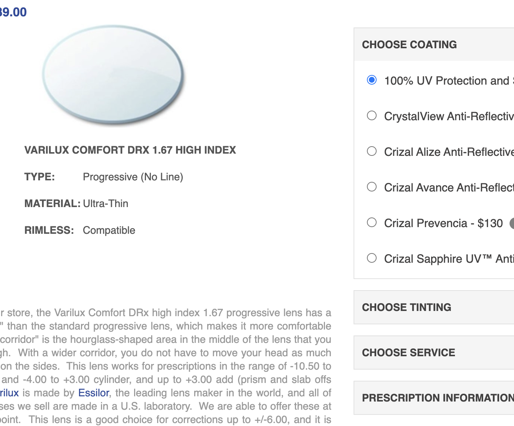
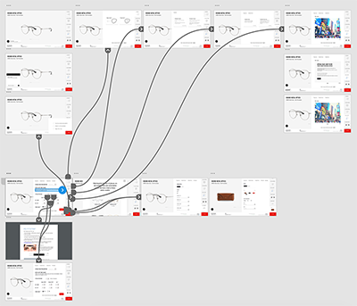
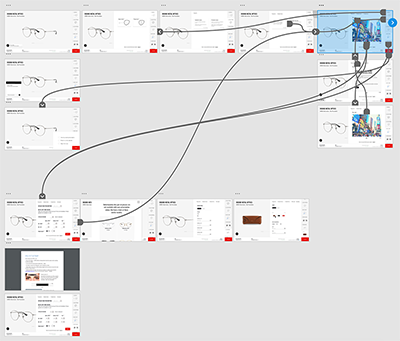

UX Use Case
Redesign of Rayban's
Prescription Flow
Brief
The aim of this project was to improve the user experience of buying a pair of glasses with a prescription via RayBan's site as well as optimizing the administrative tasks included in the process of buying a pair of glasses when prescription is needed. At the moment it's hard for the user to understand the different steps of the flow. Ray Ban also wants to be able to provide the customers with feedback regarding availability of glasses based on the information provided in the prescription, as early as possible.

Research & Benchmarking
Based upon our research and benchmarking we found out that more information could be asked from the user along the process in order to give them direct feedback of availability of the chosen glasses. Sites where the user went through multiple steps makes it easier for the user to understand what to choose and why. And, not to loose potential buyers we also made sure to give the user the freedom to skip steps and handle the prescription part old way (attaching the prescription at the purchase) if so desired.
Solution
As a solution we decided to create a user journey where the different alternatives are presented in steps to the user. In the different steps the user should be able to find out more information about terms or items if needed. With this appraoch the user have the possibility to speed up the journed if possible by skipping steps as well as giving them a good overview of the whole journey and the freedom to move back and forth in it. We also wanted to visualize the choices made thoughout the journey in case you want to go back and change something.
Another important factor affecting the choice of design was that RayBan were at the moment making a lot of changes to the site in terms of layout, icons and other visuals. So we tried to enhance these new changes in our design to embrace consistency and standardizations across the site.
From "Design your own" customization flow at the RayBan site, https://www.ray-ban.com/usa/customize/rb-3447-round-metal-sunglasses.
User flow
In this flow we considered all factors introduced to us currently on their site. At first sight we thought that the two subflows of single vision and progressive could be more integrated, but as the prices are different they had to be separated.

Prototypes
Prototypes created in Adobe XD.
 Wireframes